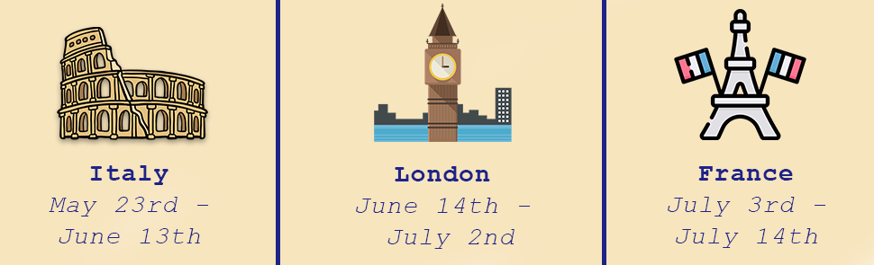

My name is Nicole Pullano. I am currently a junior at the S.I Newhouse school of Public Communications studying Advertising and pursuing a minor in Information Management & Technology in the School of Information Sciences.This past summer, I got the opportunity to study abroad for six weeks in Florence and London, and then traveled to Paris & the French Riviera with my family. This website was created as part of my web development class to showcase my wonderful experiences and memories while traveling through Europe. In the Food & Culture section, I go into a deep dive about my favorite restuarants and meals I had in each location. From homemade pizzas, to truffle pasta and meals withthe freshest ingredients, food was an obvious highlight in Europe. In People & Places, I explain my experience immersing myself in new cultures, comparing each place to home and other locations. From bustling London markets to relaxing Cannes beaches and a winery tour in Italy, my cultural experience abroad was all over the spectrum, and I wouldn't have it any other way!
Click on the image below to read
more about my experience with
food & culture abroad 🍝
Click on the image below to read
more about my experiences with
people & places in Europe 🚕